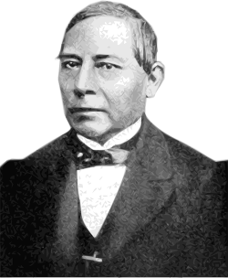

Benito Juarez
Benito Pablo Juárez García nació el 21 de marzo de 1805 en San Pablo Guelatao y murió el 18 de julio de 1872 debido a continuas disfunciones cardiacas. Es conocido por haber sido el presidente de México desde el 8 de diciembre 1852, hasta el 18 de julio de 1872. Destaco con todas sus acciones y emblemas a favor de los derechos mexicanos, por esto tras su muerte fue declarado como el Benemérito de las Américas por el congreso mexicano, poniendole como emblema la conocida frase de: "Entre los indivuduos, como entre las naciones, el respeto al derecho ajeno es igual".
Sus padres fueron Brígida garcía y Marcelino Juárez. Al quedar huerfano a los tres años queda al cuidado de su abuela Justa Lopéz y su tío, al cual ayudaba a cuidar las ovejas como pastor. En el año 1818 se traslado a la ciudad de Oaxaca donde ingresó al seminario conciliar y después al Instituto de Ciencias y Artes para estudiar derecho.
Entre los años 1844 y 1847, trabajo como juez cívil y de hacienda, fue diputado federal y secretario de gobierno en Oaxaca por lo tanto tenía buenas bases para llevar a cabo su próximo trabajo como presidente de la república mexicana. Fue así como gobernador durante cuatro años, instaló el doble de escuelas que había en ese tiempo, promulgó el Plan de Ayutla el que establecía que estiera la creación de una asamblea constituyente en el marco de una Constitución federal y acausa de su gobernado Antonio López Santa Anna fue encarecelado y desterrado del país en el año 1853.
A lo largo de su gobierno hubo varias guerras internas en el país como la guerra de reforma donde el militar Ignacio Comonfort dio un golpe de Estado y encarceló a Benito Juárez, pero este escapó de su prisión y restableció su gobierno en el Estado de Veracruz en mayo de 1858, donde expidió las leyes de reforma y proclamó una nueva constitución.
Tras estos conflictos el país calló en bancarrota por lo tanto dejaron de pagar deudas externas, lo que causo la invasión de los franceses en México en lo años 1863 a 1871. Después de estos sucesos Maximiliano se convirtió en emperador de México y acausa de esto hubo guerrillas y revueltas que consiguieron bajar a Maximiliano del poder y Juárez se reeligió por séptima vez en agosto de 1867.
A pesar de todo esto Juárez siguió restaurando las leyes de reforma y restaurando la República federal. Su gobierno termina tras su muerte en el año 1872.